특수용접기능사 (2007-04-01 기출문제)
1과목: 용접일반
1. 산소의 성질에 관한 설명으로 틀린 것은?
- 다른 물질의 연소를 돕는 조연성 기체이다.
- 아세틸렌과 혼합 연소시켜 용접, 가스절단에 사용한다.
- 산소자체가 연소하는 성질이 있다.
- 무색, 무취, 무미의 기체이다.
(정답률: 84%)

2. 스테인리스(Stainless)강의 가스 절단이 곤란한 가장 큰 이유는?
- 산화물이 모재보다 고용융점이기 때문에
- 탄소 함량의 영향을 많이 받기 때문에
- 적열 상태가 되지 않기 때문에
- 내부식성이 강하기 때문에
(정답률: 51%)
3. 산소용기에 각인도어 있는 사항의 설명으로 틀린 것은?(오류 신고가 접수된 문제입니다. 반드시 정답과 해설을 확인하시기 바랍니다.)
- TP : 내압시험압력
- FP : 최고충전압력
- V : 내용적
- W : 제조번호
(정답률: 62%)
4. 직류 역극성을 사용하는 것은?
- 아크 에어가우징
- 탄소 아크절단
- 금속 아크절단
- 산소 아크절단
(정답률: 59%)
5. 용접부의 잔류응력을 경감시키기 위해서 가스 불꽃으로 용접서 나비의 60~130㎜에 걸쳐서 150℃~200℃정도로 가열 후 수냉시키는 잔류응력 경감법을 무엇이라 하는가?
- 노내 풀림법
- 국부 풀림법
- 저온응력 완화법
- 기계적응력 완화법
(정답률: 69%)
6. 금속산화물이 알루미늄에 의하여 산소를 빼앗기는 반응에 의해 생성되는 열을 이용하여 금속을 접합하는 용접 방법은?
- 일렉트로슬래그 용접
- 테르밋 용접
- 불활성가스 금속 아크 용접
- 저항 용접
(정답률: 63%)
7. 아크용접에서 정극성과 비교한 역극성의 특징은?
- 모재의 용입이 깊다.
- 용접봉의 녹음이 빠르다.
- 비드 폭이 좁다.
- 후판 용접에 주로 사용된다.
(정답률: 61%)
8. 용해 아세틸렌의 장점 중 틀린 것은?
- 운반이 쉽고, 발생기 및 부속장치가 필요 없다.
- 용기를 뉘어서 사용해도 된다.
- 순도가 높고 좋은 용접을 할 수 있다.
- 아세틸렌의 손실이 대단히 적다.
(정답률: 84%)
9. 전기 저항열을 이용한 방법은?
- 가스 납땜
- 유도가열 납땜
- 노내 납땜
- 저항 납땜
(정답률: 75%)
10. 서브머지드 아크용접의 특징이 아닌 것은?
- 용접설비가 상당히 비싸다.
- 아크가 보이지 않으므로 용접부의 적부를 확인하기가 곤란하다.
- 용접 길이가 짧을 때 능률적이며 수평 및 위보기자세 용접에 주로 이용된다.
- 용입이 크므로 용접 홈의 정밀도가 좋아야 한다.
(정답률: 71%)
11. 연강용 아크용접봉과 피복제 계통이 잘못 짝지어진 것은?
- E4316 - 저수소계
- E4311 - 고셀룰로스계
- E4327 - 철분저수소계
- E4303 - 라임티타니아계
(정답률: 63%)
12. 피복 아크 용접에서 기공 발생의 원인이 되는 것은?
- 용접봉이 건조하였을 때
- 용접봉에 습기가 있었을 때
- 용접봉이 긁었을 때
- 용접봉이 가늘었을 때
(정답률: 90%)
13. 프랑스식 팁 100번은 몇 ㎜ 연강판의 용접에 적당한가?
- 1~1.5
- 10~20
- 5~7
- 8~9
(정답률: 37%)
14. 프로판가스 정장실의 통풍용 환기 구멍이 아래쪽에 위치하는 가장 큰 이유는?
- 가스를 조절하기 쉬우므로
- 공기보다 무거우므로
- 구멍 뚫기가 쉬우므로
- 물이 잘 빠지게 하기 위하여
(정답률: 84%)
15. 피복제의 주된 역할로 틀린 것은?
- 아크를 안정하게 한다.
- 스패터링(spattering)을 많게 한다.
- 모재 표면의 산화물을 제거 한다.
- 슬래그 제거를 쉽게 하고, 파형이 고운 비드를 만든다.
(정답률: 87%)
16. 가스용접에서 전진법과 비교한 후진법(back hand method)의 특징 설명에 해당되지 않는 것은?
- 두꺼운 판의 용접에 적합하다.
- 용접 속도가 빠르다.
- 용접 변형이 크다.
- 소요홈의 각도가 작다.
(정답률: 64%)
17. 가스용접에 사용되는 연료가스와 화학식이 잘못 연결된 것은?
- 아세틸렌 - C2H2
- 프로판 - C3H8
- 메탄 - C4H10
- 수소 - H2
(정답률: 46%)
18. 가스 용접의 불꽃 온도 중 가장 낮은 것은?
- 산소 - 아세틸렌 용접
- 산소 - 프로판 용접
- 산소 - 수소 용접
- 산소 - 메탄 용접
(정답률: 52%)
19. 용접 작업시 전격방지를 위한 주의사항 중 틀린 것은?
- 캡타이어 케이블의 피복상태, 용접기의 접지상태를 확실하게 점검할 것
- 기름기가 묻었거나 젖은 보호구와 복장은 입지 말 것
- 좁은 장소의 작업에서는 신체를 노출시키지 말 것
- 개로 전압이 높은 교류 용접기를 사용할 것
(정답률: 89%)
20. 용제(FLUX)가 필요한 용접은?
- MIG 용접
- TIG 용접
- 원자 수소 용접
- 서브머지드 용접
(정답률: 56%)
21. 용접기에 AW -300이란 표시가 있다. 여기서 300은 무엇을 뜻하는가?
- 2차 최대 전류
- 최고 2차 무부하 전압
- 정격 사용률
- 정격 2차 전류
(정답률: 71%)
22. 용접의 일반적인 특징을 설명한 것 중 틀린 것은?
- 제품의 성능과 수명이 향상되며 이종 재료도 용접이 가능하다.
- 재료의 두께에 제한이 없다.
- 보수와 수리가 어렵고 제작비가 많이 든다.
- 작업공정이 단축되며 경제적이다.
(정답률: 81%)
23. 피복아크 용접봉의 용융속도는 어느 식으로 결정되는가?
- 아크전류 × 용접봉쪽 전압강하
- 아크전류 × 모재쪽 전압강하
- 아크전압 × 용접봉쪽 전압강하
- 아크전압 × 모재쪽 전압강화
(정답률: 67%)
24. 용접금속의 구조상의 결함이 아닌 것은?
- 변형
- 기공
- 언더컷
- 균열
(정답률: 74%)
25. 모재의 홈 가공을 V형으로 했을 경우 엔드탭(end-tap)은 어떤 조건으로 하는 것이 가장 좋은가?
- T형 홈 가공으로 한다.
- V형 홈 가공으로 한다.
- X형 홈 가공으로 한다.
- 홈가공이 필요 없다.
(정답률: 68%)
26. 다음 용접범의 분류 중 압접에 해당하는 것은?
- 테르밋 용접
- 전자 빔 용접
- 유도가열 용접
- 탄산가스 아크 용접
(정답률: 42%)
27. 납땜할 때 염산이 피부에 튀었을 경우의 조치로 옳은 것은?
- 빨리 물로 세척한다.
- 외상이 나타나지 않는 한 그대로 둔다.
- 손으로 문질러 둔다.
- 머큐로크롬을 바른다.
(정답률: 81%)
28. 강재 표면의 홈이나 개재물, 탈탄층 등을 제거하기 위하여 될 수 있는 대로 얇게, 그리고 타원형 모양으로 표면을 깎아 내는 가공법은?
- 스카핑
- 가스가우징
- 선삭
- 천공
(정답률: 84%)
29. 피복아크 용접에서 과대전류, 용접봉 운봉각도의 부적합, 용접속도가 부적당할 때, 아크길이가 길 때 일어나며, 모재와 비드 경계부분에 패인 홈으로 나타나는 표면결함은?
- 스패터
- 언더 컷
- 슬랙 섞임
- 오버 랩
(정답률: 67%)
30. 마찰 용접의 장점이 아닌 것은?
- 용접작업 시간이 짧아 작업 능률이 높다.
- 이종금속의 접합이 가능하다.
- 피용접물의 형상치수, 길이, 무게의 제한이 없다.
- 치수의 정밀도가 높고, 재료가 절약된다.
(정답률: 58%)
31. 아크 용접봉의 피복제 중에서 아크 안정 성분은?
- 산화 티탄
- 붕사
- 페로 망간
- 니켈
(정답률: 54%)
32. 용접제품을 파괴치 않고 육안검사가 가능한 결함은?
- 라미네이숀
- 피트
- 기공
- 은점
(정답률: 35%)
33. 용접기의 아크 발생을 8분간하고 2분간 쉬었다면, 사용률은 몇 % 인가?
- 25
- 40
- 65
- 80
(정답률: 69%)
34. 다음 중 산소 용기 취급에 대한 설명이 잘못된 것은?
- 산소용기 밸브, 조정기 등은 기름천으로 잘 닦는다.
- 산소용기 운반 시에는 충격을 주어서는 안 된다.
- 산소 밸브의 개폐는 천천히 해야 한다.
- 가스 누설의 점검을 수시로 한다.
(정답률: 81%)
35. 가스절단에서 양호한 절단면을 얻기 위한 조건으로 틀린 것은?
- 드래그(drag)가 가능한 한 클 것
- 경제적인 절단이 이루어질 것
- 슬래그 이탈이 양호할 것
- 절단면 표면의 각이 예리할 것
(정답률: 77%)
2과목: 용접재료
36. Al-Mg계 합금이며 내식성 알루미늄 합금의 대표적인 것으로 강도와 인성이 좋은 재료는?
- Y합금
- 하이드로날륨
- 듀랄루민
- 실루민
(정답률: 35%)
37. 일반적으로 보통 주철은 어떤 형태의 주철인가?
- 칠드주철
- 가단주철
- 합금주철
- 회주철
(정답률: 47%)
38. 고장력강 용접 시 주의사항 중 틀린 것은?
- 용접봉은 저수소계를 사용할 것
- 용접 개시 전에 이음부 내부 또는 용접부분을 청소할 것
- 아크 길이는 가능한 길게 유지할 것
- 위빙 폭을 크게 하지 말 것
(정답률: 77%)
39. 오스테나이트계 스테인리스강의 성분은?
- Ni 18% ＋ Cr 8%
- W 18% ＋ Ni 8%
- Cr 18% ＋ Ni 8%
- Ni 18% ＋ W 8%
(정답률: 67%)
40. 공석강의 탄소(C)함량은 얼마인가?
- 0.02%
- 0.77%
- 2.11%
- 6.68%
(정답률: 51%)
41. 주철용접에 관한 설명으로 옳지 않은 것은?
- 주철 속에 기름, 흙, 모래 등이 있는 경우에 용착이 양호하고 모재와의 친화력이 좋다.
- 주철은 연강에 비하여 여리며, 수축이 많아 균열이 생기가 쉽다.
- 주철은 급냉에 의한 백선화로 기계가공이 곤란하다.
- 일산화탄소 가스가 발생하여 용착 금속에 가공이 생기기 쉽다.
(정답률: 60%)
42. 알루미늄 합금 용접시 청정작용이 잘되는 것은?
- Ar 가스 사용, DCSP
- He 가스 사용, DCSP
- Ar 가스 사용, ACHF
- He 가스 사용, ACHF
(정답률: 40%)
43. 다음 중 용접성이 가장 좋은 금속은?
- 주철
- 주강
- 저탄소강
- 고탄소강
(정답률: 44%)
44. 일반구조용 강재의 용접응력 제거를 위해 노내 및 국부 풀림의 유지온도로 적당한 것은?
- 825±25℃
- 625±25℃
- 525±25℃
- 325±25℃
(정답률: 74%)
45. 백동 또는 양은이라고도 하며 7 : 3 황동에 10~20%의 Ni을 첨가한 것으로 전기저항체, 밸브, 콕크, 광학기게 부품 등에 사용되는 구리합금은?
- 양백
- 문쯔메탈
- 톰백
- 쾌삭황동
(정답률: 29%)
46. 일반적으로 스테인리스강의 종류에 해당 되는 것은?
- 비자성 스테인리스강
- 영구자석 스테인리스강
- 페라이트계 스테인리스강
- 홀라티나이트 스테인리스강
(정답률: 75%)
47. 구리에 관한 설명으로 틀린 것은?
- 전기 및 열의 전도율이 높은 편이다.
- 전연성이 매우 크므로 상온가공이 용이하다.
- 화학적 저항력이 적어서 부식이 쉽다.
- 아름다운 광택과 귀금속적 성질이 우수하다.
(정답률: 67%)
48. 용접금속에 수소가 잔류하면 헤어크랙(Hear Crack)의 원인이 된다. 용접시 수소의 흡수가 가장 많은 강은?
- 저탄소킬드강
- 세미킬드강
- 고탄소림드강
- 림드강
(정답률: 36%)
49. 다음 중 비중이 가장 높은 금속은?
- 크롬
- 바나듐
- 망간
- 구리
(정답률: 43%)
50. 일반적으로 주철의 장점이 아닌 것은?
- 압축강도가 크다.
- 담금질성이 우수하다.
- 내마모성이 우수하다.
- 주조성이 우수하다.
(정답률: 27%)
3과목: 기계제도
51. 큰 도면을 접을 때에 일반적으로 얼마의 크기로 접는 것을 원칙으로 하는가?
- A5
- A4
- A3
- A2
(정답률: 74%)
52. 용접부 비파괴 시험 기호 중 자분탐상 시험 기호는?
- V T
- R T
- J T
- M T
(정답률: 50%)
53. 보기와 같은 제3각 정 투상도에서 누락된 우측면도로 가장 적합한 것은?
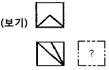
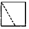
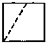
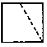
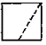
(정답률: 68%)
54. 보기 입체도의 화살표 방향을 정면으로 할 때 우측면도로 적합한 투상은?
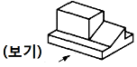
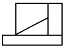
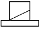
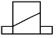
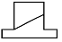
(정답률: 84%)
55. 도면에 2가지 이상이 같은 장소에 겹치어 나타내게 될 경우 다음 중에서 우선순위가 가장 높은 것은?
- 숨은선
- 외형선
- 절단선
- 중심선
(정답률: 60%)
56. 보기와 같은 KS 용접 기호의 해독으로 틀린 것은?
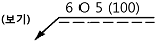
- 화살표 반대쪽 스폿 용접
- 스폿부의 지름 6㎜
- 용접부의 개수(용접 수) 5개
- 스폿 용접한 간격은 100㎜
(정답률: 63%)
57. 보기 입체도에서 화살표 쪽을 정면도로 한다면 평면도를 올바르게 나타낸 것은? (단, 평면도상에서 상하, 좌우방향의 형상은 대칭이다.)
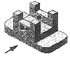
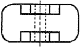
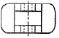
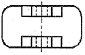
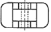
(정답률: 53%)
58. 다음 중 호의 길이 치수 표시로 가장 적합한 것은?
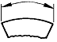
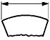
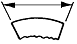
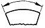
(정답률: 63%)
59. 용접부의 보조기호에서 제거 가능한 덮개 판을 사용하는 경우의 표시기호는?
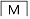
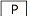
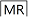
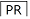
(정답률: 78%)
60. 다음 투상도법 중 제 1각법과 제 3각법이 속하는 투상도법은?
- 정투상법
- 등각 투상법
- 사투상법
- 부등각 투상법
(정답률: 70%)